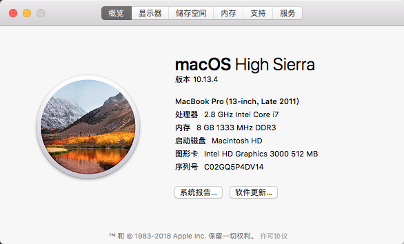

vim常用
@(Vim笔记)

前言
鉴于我的Mac实在太古老了,开大型的ide整个机子散热基本可以蒸肠粉了,于是还是切回到Vim底下进行开发,以下是我自己个人开发当中比较经常用到的一些操作,这个帖子我会不间断的进行更新,有什么比较好的操作都会补上.给那些懒得看Vim tutorial的人上手用.小Tip:
Vim的Ctrl可以简写成c/C,Shift可以简写成s/S,Enter可以简写成CR/cr
Normal模式
移动
1 | w 跳到下一个单词的开头 |
插入
1 | i 当前位置插入 |
删除
1 | x 从左往右删除当前位置字符 |
复制
1 | yy 复制整行(y代表yank) |
替换
1 | cw change当前位置到下一个单词之间的内容,不含空格,并进入插入模式 |
大小写转换
1 | ~ 将光标下的字母改变大小写 |
搜索
1 | f-字母 跳到该行的第一个搜索字母上 |
插入模式
代码提示,原生OnmiComplete
1 | <c-x><c-o>代码提示 |
视图模式
1 | shlft+v 横向选择 |
命令行模式
常用
1 | :tabe-filename 新建一个窗口打开文件(tab edit filename) |
作用范围
:{作用范围}s/{目标}/{替换}/{替换标志}
作用范围分为当前行、全文、选区等等。
当前行：
:s/foo/bar/g
全文:
:%s/foo/bar/g
选区，在Visual模式下选择区域后输入:，Vim即可自动补全为 :’<,’>。
:’<,’>s/foo/bar/g
2-11 行
:5,12s/foo/bar/g
当前行.与接下来两行+2：
:.,+2s/foo/bar/g
替换标志
上文中命令结尾的g即是替换标志之一，表示全局global替换（即替换目标的所有出现）。 还有很多其他有用的替换标志：
空替换标志表示只替换从光标位置开始，目标的第一次出现：
:%s/foo/bar
i表示大小写不敏感查找，I表示大小写敏感：
:%s/foo/bar/i
等效于模式中的\c（不敏感）或\C（敏感）
:%s/foo\c/bar
c表示需要确认，例如全局查找”foo”替换为”bar”并且需要确认：
:%s/foo/bar/gc
跨文件替换,项目内替换
1.把文件加入到buffer当中:arg *.go 列出当前目录下所有的go文件:arg列出所有的buffer文件:argadd *.js追加所有的js到buffer中
2.执行替换:argdo %s/pattern/replace/ge | update
将所有的.go文件加入到buffer,然后将pattern的内容替换成replace,然后保存文件